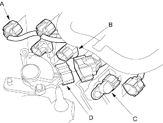
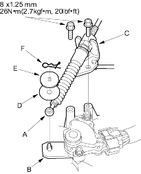
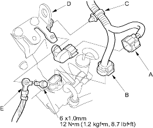
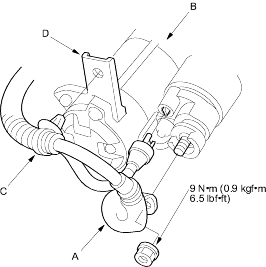

- Connect the connectors to the CVT speed sensor connector (A), vehicle speed sensor (B), CVT driven pulley speed sensor (C) and transmission range switch (D).

- Install the shift cable end (A) on the control lever (B) and install the shift cable bracket (C) on the transmission. Do not bend the shift cable excessively.

- Install the plastic washer (D) then the steel washer (E) and install the spring clip (F) in the direction shown.
- Connect the CVT drive pulley speed sensor connector (A) and solenoid harness connector (8P) (B) and install the harness clamp (C) on the transmission hanger (D).

- Install the transmission ground cable (E) on the transmission hanger.
- Connect the starter cable (A) to the starter (B) and install the harness clamp (C) on the clamp bracket (D). Make sure the crimped side of the starter cable ring terminal is facing out.
